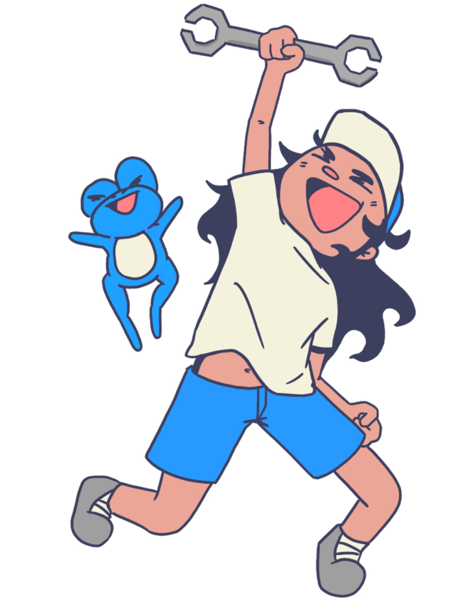

About Me
Hi! I'm Ava, a UX designer and developer passionate about creating experiences that are both intuitive and meaningful. I combine design thinking with coding to bring ideas to life—whether through interactive web experiences, data-driven projects, or prototyping physical products. I study Information Technology and Design as well as Geographic Information Systems, which gives me a unique perspective on how technology, data, and human experiences intersect. I'm always exploring new ways to make technology more human-centered and accessible.

My Skills ⤵
UX/UI Design
User Research
Accessibility
Wireframing
Prototyping
Figma
HTML
CSS
JavaScript
Python
Git
React
Physical Prototyping
Storytelling